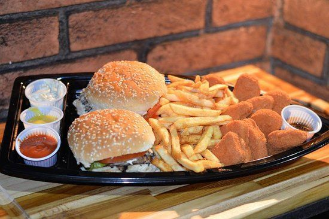

Como está seu colesterol?
Bem-vindos a bordo do SS Colesterol, a barca que navega pelos mares do sabor, mesmo que às vezes um pouco perigosos para a saúde!
Ahoy, marinheiros destemidos e amantes da boa comida! Preparem-se para uma jornada gastronômica ousada, onde o colesterol é o nosso capitão! Sim, você ouviu direito. Na nossa barca, não medimos esforços para elevar os níveis de colesterol ao máximo!
Nossa tripulação de chefs malucos trabalha incansavelmente para criar pratos que desafiam as leis da nutrição e da moderação. Do nosso famoso hambúrguer de bacon triplo coberto com queijo derretido até o nosso camarão mergulhado em molho de manteiga, cada mordida é uma aventura no território do sabor... e do perigo!.

Dupla Saúde
Ahoy, aventureiros do apetite e destemidos exploradores gastronômicos! Preparem-se para uma jornada inesquecível a bordo da SS Dupla Saúde, onde cada prato é uma aventura de sabores... e talvez um desafio para sua saúde cardiovascular!
Nossa embarcação, apelidada carinhosamente de "Dupla Saúde" - porque, afinal, rir é o melhor remédio! - é famosa por desafiar até mesmo os mais corajosos defensores da alimentação saudável. Aqui, nós nos orgulhamos de oferecer uma variedade de pratos que são uma mistura perfeita de sabor e, bem, digamos que um pouco de aventura cardíaca.
Trio mata um
Ah, preparem seus estômagos e afiem seus sentidos, pois chegou a barca dos destemidos, a lenda gastronômica conhecida como Trio Mata Um! Imaginem uma embarcação tão monumental que faz o Titanic parecer uma canoa de papelão em um lago de margarina.
Essa nau tem como capitão o Mestre dos Molhos, um sujeito que parece ter nascido com uma colher de pau na mão e um avental de batalha no peito. A tripulação é formada pelos Intrépidos do Bacon, que enfrentam qualquer salada que se atreva a cruzar seus caminhos, e pelos Guerreiros da Fritura, que dominam o território da crocância como verdadeiros mestres samurais.